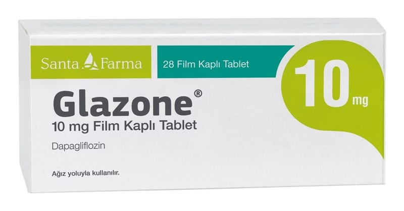

Glazone 10 mg Film Kaplı Tablet, 28 ADET

Ne için kullanılır
KT · Bölüm 1 GLAZONE®sarı renkli, bikonveks, yuvarlak film kaplı tablettir. GLAZONE®28 tabletlik blisterlerde karton kutularda kullanıma sunulmaktadır. GLAZONE®etkin madde olarak 10 mg dapagliflozin içerir. Dapagliflozin sodyum-glukoz ko-transporter 2 inhibitörleri adı verilen bir ilaç grubuna dahildir. Bu ilaçlar böbreklerinizdeki SGLT2 proteinini bloke ederek etki gösterir. Bu proteinin bloke edilmesiyle, kandaki şeker (glukoz), tuz (sodyum) ve su vücudunuzdan idrar yoluyla atılır.
GLAZONE®yetişkin hastalarda (18 yaş ve üzeri) aşağıdakilerin tedavisi için kullanılır:
Tip 2 diyabet
- Tip 2 diyabetin, diyet ve egzersiz ile kontrol altına alınamadığı durumlarda GLAZONE®tek başına veya tip 2 diyabet tedavisine yönelik başka ilaçlarla birlikte kullanılabilir.
- Doktorunuz, eczacınız veya hemşireniz tarafından verilmiş olan diyet ve egzersiz tavsiyesine uymaya devam etmeniz önemlidir.
Tip 2 diyabet nedir ve tip 2 diyabet tedavisinde GLAZONE®nasıl yardımcı olur? Tip 2 diyabette vücudunuz yeterli miktarda insülin üretemez veya üretilen insülini düzgün şekilde kullanamaz. Buna bağlı olarak kanınızda yüksek şeker (glukoz) düzeyi ortaya çıkar. Yüksek şeker düzeyleri kalp veya böbrek hastalığı, görme kaybı, kollar ve bacaklarınızda dolaşım bozukluğu gibi ciddi problemlere yol açabilir. GLAZONE®fazla şekeri vücudunuzdan atarak etki gösterir ve kalp hastalıklarını önlemeye de yardımcı olabilir.